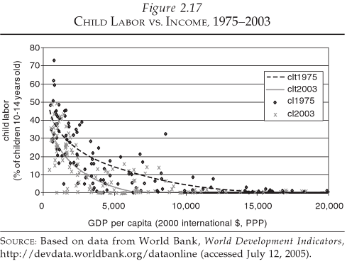

Radical Optimism
Reason-based Optimism About Everything
Radical Optimism
- What is it?
- Why be optimistic?
- Evidence
- Conclusion
What is it?
- Media, education, and popular culture promote cynicism and "realism."
- There are good reasons and evidence that things aren't as bad...
- And in most ways, they're getting better!
- Radical optimism is reason-based optimism about everything.
- Reason includes logic and philosophy.
- Evidence includes historical and scientific data.
- Website cites all claims: http://radicaloptimism.org/. Decide for yourself.
Grumps
I'll refer to a cynic or "realist" as Grumps. At the end, I'll explain "realism" and why I think it's actually cynical.
Optimist


Why be Optimistic?
- Increased happiness, decreased depression (Seligman 2005).
- Less likely to die of heart attack (Giltay 2004).
- Tend towards better moods, more persevering and successful, better physical health (Peterson 2000).
- Higher incomes (Diener 2002).
- Better relationships (Gable 2004).
- More creative thinking to solve problems (Isen 1987).
- Reason and Evidence support it...
Evidence
- Poverty
- Health
- Population
- Violence
- Education
- Work
- Environment
- Inequality
Poverty (Grumps)
Poverty is not improving.
Poverty (Optimist)
Global proportion in poverty decreasing dramatically
Poverty (Optimist)
Global per-person wealth increasing
Poverty (Optimist)
Global energy use increasing
Poverty (Optimist)
Global per-person food increasing
Poverty (Optimist)
Cropland per person decreasing
Poverty (Optimist)
Food supplies correlated with income
Health (Grumps)
Rising obesity is a sign of poorer health
Health (Optimist)
Global life expectancy increasing
Health (Optimist)
Life expectancy correlated with income
Health (Optimist)
Infant mortality correlated with income
Health (Optimist)
U.S. male cancer rates going down
Health (Optimist)
U.S. female cancer rates going down
Population (Grumps)
Overpopulation is a threat to society
Population (Optimist)
Fertility approaching replacement
Population (Optimist)
Fertility correlated with wealth
Violence (Grumps)
Violence and wars are getting worse
Violence (Grumps)

Violence (Optimist)
No trend in atrocities as percent of population
Violence (Optimist)
European example of homicide rate decreasing
Violence (Optimist)
Violence has declined over long stretches of time, and today we may be living in the most peaceable era in our species' existence. The decline, to be sure, has not been smooth; it has not brought violence down to zero; and it is not guaranteed to continue. But it is an unmistakable development, visible on scales from millenia to years, from the waging of wars to the spanking of children. No aspect of life is untouched by the retreat from violence.
Education (Grumps)
People are getting dumber.
Education (Optimist)
Education per person increasing
Education (Optimist)
Average scores on intelligence tests are rising substantially and consistently, all over the world (the "Flynn Effect"). These gains have been going on for the better part of a century—essentially ever since tests were invented. The rate of gain on standard broad-spectrum IQ tests amounts to three IQ points per decade, and it is even higher on certain specialized measures.
Work (Grumps)
We work ourselves to death
Work (Optimist)
Hours worked per person decreasing
Work (Optimist)
Child labor correlated with income

Environment (G)
Anthroprogenic climate change will destroy the planet
Environment (G)
We're pooping in our own backyard
Environment (O)
Estimates derived from observed climate change tend to best fit the observed surface and ocean warming for ECS values in the lower part of the likely range (U.N. IPCC).
Environment (O)
While heat waves, rain, and tropical cyclones have increased, there is little global evidence that floods, droughts, small-scale severe weather phenomena, tropical storms, or major hurricanes have increased (U.N. IPCC).
A global mean average temperature rise of 2.5C may lead to global aggregated economic losses between 0.2 and 2.0% of income (U.N. IPCC).
Environment (O)
Increasing vegetation from increasing CO2
Environment (O)
Forest cover correlated with wealth
Environment (O)
Global deaths due to climate disasters decreasing
Environment (O)
U.S. pollution decreasing
Environment (O)
OECD pollutions decreasing
Environment (O)
U.S. indoor air quality improving
Environment (O)
Safe water correlated with wealth
Inequality (Grumps)
Inequality is increasing.
Inequality (Optimist)
Global income inequality decreasing

Inequality (Optimist)
No change in global gini index
Inequality (Optimist)
Rich getting richer but poor moreso
What about evil?
Morality seems to be progressing (may be correlated with wealth).
As Ridley writes, progress has occurred despite the "chiefs, priests, and thieves."
"Realism"
"Realism" is often status quo biases and emotional prejudices wrapped in a pretense of objectivity and balance.
Actually cynical because it disregards optimistic evidence.
One way to tell a "realist" versus a realist: Are they curious about the evidence of optimism?
True realism usually warrants, at minimum, some optimism.
What if?
What if there is truly a disaster?
Whether psychological, societal, or planetary, we have a good history of beating it.
The more average wealth, the better our chances.
Despite "recklessly" increasing its numbers... humanity has never been better fed, healthier, or longer lived... the average person's life span has more than doubled. He is better educated and wealthier. She is freer to choose her rulers and express her views... Her professional, social, and physical mobility... is less likely to be circumscribed by caste, class, location, or other accidents of birth. Not only is work less physically demanding, he works fewer hours, earns more, and has more leisure time at his disposal. The proximate causes for the improvements in the human condition... are the forces of technological change and economic growth, supplemented by trade in products, ideas, and technologies (Goklany).
Call to Inaction?
No! Let's work to improve the world more.
Economic progress seems to be the main driving force.
Personal exercise: Every night, write down three things that went well that day.
THE END
You'll do great today.
And if you don't, try to find optimistic ways to look at it.
Presentation @ http://averageradical.github.io/radicaloptimism/